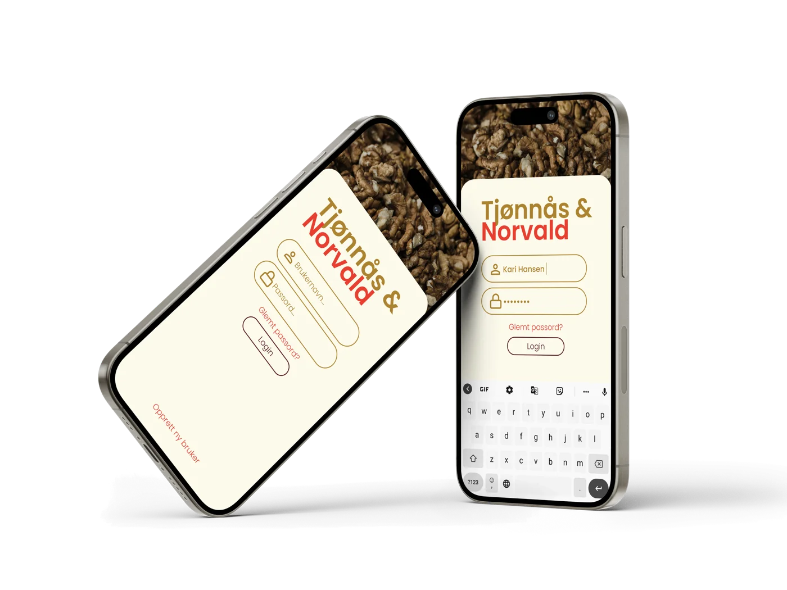
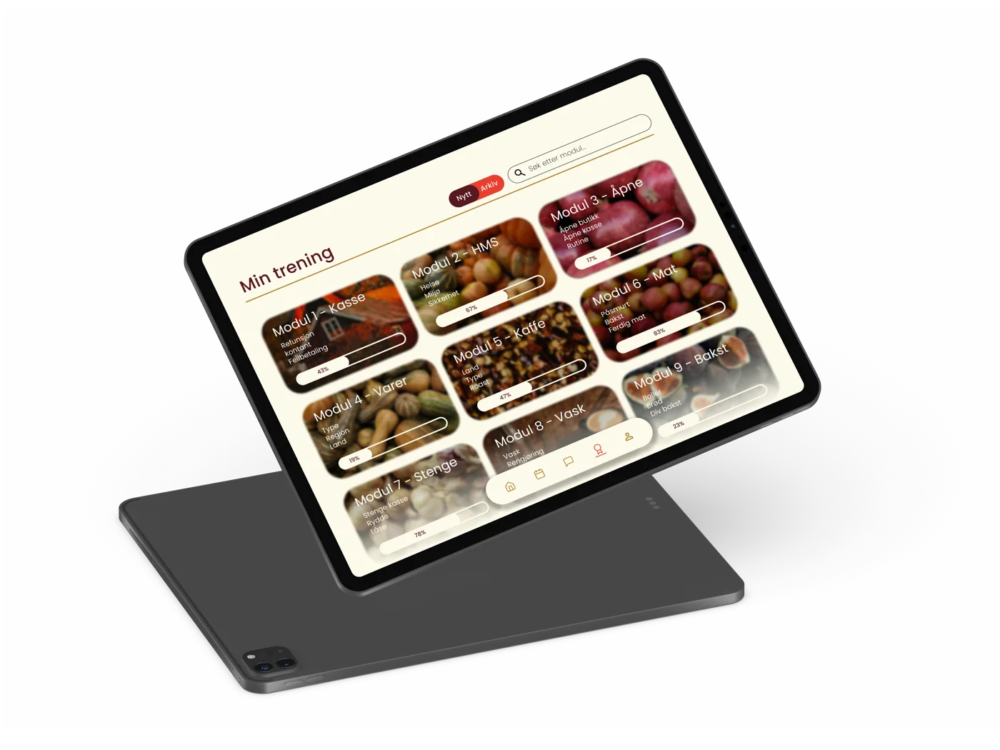
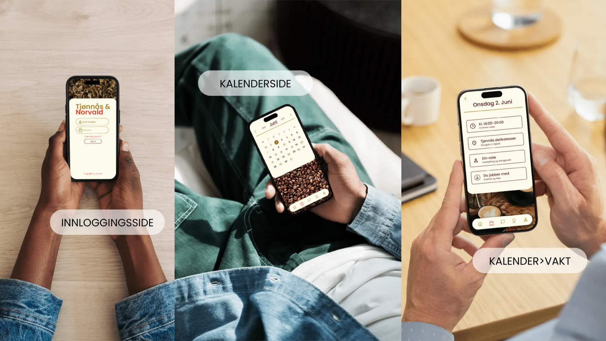

KONTEKST
Tjønnås & Norvald er en kafé og delikatessebutikk midt i Gjøvik — uten en felles digital struktur.
Prosjektet var en del av IDG3009 – Informasjonsarkitektur ved NTNU Gjøvik, høsten 2025. Vi tok utgangspunkt i et reelt behov: Tjønnås Delikatesser og Norvald Café driftes av samme ledelse, men hadde ingen felles digital struktur for de ansatte.
Vi gjennomførte et semi-strukturert intervju med Mari-Mette, daglig leder for begge virksomhetene, for å forstå hvordan arbeidsdagen faktisk fungerte — valgt fremfor et strukturert intervju nettopp for å fange opp innsikter vi ikke visste vi lette etter.

PROBLEM
Fem systemer, ingen oversikt.
Intervjuet avdekket at driften var fordelt på fem ulike kanaler, uten noen felles struktur:
- Vaktplan i ett system
- Lønn og økonomi i et annet
- Internkommunikasjon i Messenger-grupper
- Rutiner i Apple Notater
- Opplæring gitt muntlig, fra vakt til vakt
Med hyppig utskiftning av unge deltidsansatte ble viktig informasjon ofte borte i prosessen.

«Driften er avhengig av flere separate systemer, noe som gjør kommunikasjon, vaktplanlegging og opplæring unødvendig tidkrevende.»
PROSESS
Fra innsikt til løsning.
Basert på ett intervju med reell drifts-innsikt (ikke antagelser), kartla vi funn i en affinity map og bygde hi-fi wireframes rundt to primærpersonas — Kari (erfaren) og Eirik (nyansatt).
INFORMASJONSARKITEKTUR
Seks kjerneområder, én bunnnavigasjon.
Sitemapet ble utarbeidet etter affinity-mappingen, hvor seks tematiske områder utkrystalliserte seg som kjernen i portalen. Strukturen speiler bottom-navigasjonen i prototypen, slik at den mentale modellen brukeren bygger opp gjennom sitemapet matcher den faktiske appen 1:1.
DESIGN 1/3

Onboarding— en dør inn
En ansattportal trenger en dør. Innlogging med brukernavn og passord ble lagt til sent i wireframe-fasen, da det ble tydelig at innholdet er internt og personlig — vaktplaner, kollegers navn og opplæringsprogresjon skal ikke være åpent for hvem som helst.
DESIGN 2/3
Mobil — Vaktplan(Kari)
Login → Hjem → Kalender → Vaktdetaljer
Mål: Gi ansatte rask tilgang til vaktplanen uten å måtte være på arbeidsplassen.
Brukerscenario: Kari ønsker å sjekke vaktene sine hjemmefra når hun skal planlegge ferie.
- Kalender med månedsoverblikk.
- Tydelige vaktkort med tid, sted og kolleger.
- Mobiltilpasset fordi ansatte ofte sjekker vakter på farten.
Løste behov: Oversikt over vakter · Mindre avhengighet av fysisk vaktliste · Enklere ferieplanlegging
DESIGN 3/3
iPad — Opplæring(Eirik)
Login → Opplæring → Modul → Video → Ferdig
Mål: Gjøre opplæringen enklere og mer tilgjengelig for nyansatte.
Brukerscenario: Eirik trenger å repetere åpnerutinen uten å måtte spørre kollegaer.
- Modulbasert opplæring.
- Progresjonsindikator.
- Video og steg-for-steg-instruksjoner.
- Tilgjengelig på iPad i butikken.
Løste behov: Rask tilgang til rutiner · Konsistent opplæring · Mindre behov for muntlig oppfølging

HVORFOR DISSE TO SCENARIOENE?
Vi valgte å fokusere på Kari og Eirik fordi de representerte de to viktigste behovene som kom frem i intervjuet: oversikt over vakter og tilgjengelig opplæring. Ved å løse disse utfordringene kunne én samlet ansattportal redusere behovet for flere separate systemer og gjøre arbeidshverdagen enklere. Dette bygger direkte på innsikten fra intervjuet, personaene og scenarioene i prosjektet.

TESTING — HVA SOM MANGLER
Prototypen ble ikke brukertestet.
Vi gjennomførte et semi-strukturert intervju med daglig leder tidlig i prosjektet, og brukte innsikten derfra til å bygge personas, scenarier, informasjonsarkitektur, wireframes og hi-fi-prototyper. På grunn av prosjektets omfang og tidsramme rakk vi derimot ikke å gjennomføre formell brukbarhetstesting av den ferdige prototypen.
Neste steg ville vært moderert brukertesting med ansatte — særlig nyansatte og erfarne ansatte — for å validere navigasjon, onboarding og opplæringsflyt. Med en uke til rådighet ville jeg rekruttert to nyansatte og to erfarne ansatte, gitt dem realistiske oppgaver som å finne neste vakt eller fullføre en opplæringsmodul, og målt hvor de nølte.
MITT BIDRAG
Hva jeg eide i dette prosjektet.
Min rolle i prosjektet var intervjuguide, transkribering av intervjuet, affinity map, personas og scenarier, designvalg, og rapportskriving. Jeg utarbeidet intervjuguiden og gjennomførte transkriberingen som la grunnlaget for affinity-mappingen, og var med på å utvikle personas og scenarier — inkludert primærbrukerne Kari og Eirik — samt en rekke av designvalgene som ligger til grunn for løsningen.
Figma-prototype (NB: kan lastes litt sakte)
GRUPPE 01
Teamet bak prosjektet.
Josefine Reichelt Gjertsen
Intervjuguide · Transkribering · Personas · Designvalg · Rapport
Herman Brenn-Svendsen
Sitemap · Prototyper · Wireframes
Tia Linnea Dahl
Designmanual · Personas · Rapport
Axel Bruusgaard Jewett
Prototyper · Wireframes · Intervju